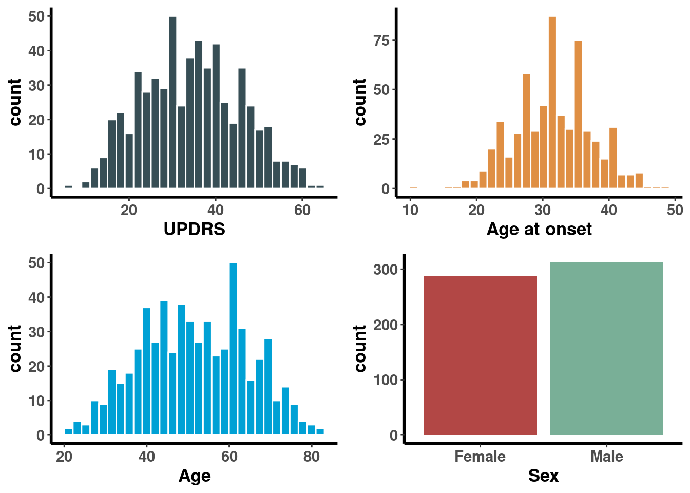

Chapitre 4 Exemple 1
Lien entre l’updrs on et la durée de la maladie, la mutation, sexe et l’âge at onset.
UPDRS ~ Disease duration * Mutation + Sexe + Age at onset
4.1 Importation et data management
## Mutation Age_at_onset Sex Disease_duration Age UPDRS
## 1 m/m 40 Female 22 62 29.33609
## 2 m/m 35 Male 19 54 35.22323
## 3 m/m 34 Female 25 59 36.21443
## 4 m/m 36 Male 24 60 45.43737
## 5 m/m 47 Female 33 80 38.78300
## 6 m/m 40 Male 32 72 39.65993## 'data.frame': 600 obs. of 6 variables:
## $ Mutation : chr "m/m" "m/m" "m/m" "m/m" ...
## $ Age_at_onset : int 40 35 34 36 47 40 43 49 42 34 ...
## $ Sex : chr "Female" "Male" "Female" "Male" ...
## $ Disease_duration: int 22 19 25 24 33 32 6 29 39 14 ...
## $ Age : int 62 54 59 60 80 72 49 78 81 48 ...
## $ UPDRS : num 29.3 35.2 36.2 45.4 38.8 ...4.2 Exploration des données
Code
| Female | Male | P-Value | |
|---|---|---|---|
| n = 288 | n = 312 | ||
| Mutation | 0.143 | ||
| f/f | 54 (18.8%) | 46 (14.7%) | |
| f/s | 43 (14.9%) | 57 (18.3%) | |
| m/f | 55 (19.1%) | 45 (14.4%) | |
| m/m | 52 (18.1%) | 48 (15.4%) | |
| m/s | 40 (13.9%) | 60 (19.2%) | |
| s/s | 44 (15.3%) | 56 (17.9%) | |
| Age at onset at onset | 0.01 | ||
| 32.3 (6.0) | 31.1 (5.6) | ||
| Disease duration | 0.62 | ||
| 20.3 (11.2) | 19.8 (11.4) | ||
| Age | 0.114 | ||
| 52.6 (12.7) | 50.9 (13.2) |
4.3 Analyse bi-variée relation entre nos covariables
4.3.1 Age at onset & Mutation
Code
aov <- data %>% anova_test(Age_at_onset ~ Mutation)
data %>%
ggplot(aes(x = Mutation, y = Age_at_onset, color = Mutation))+
stat_boxplot(geom ='errorbar', width = 0.4, lwd = 0.85)+
geom_boxplot(outlier.shape = NA, lwd = 0.85)+
geom_jitter(alpha = 0.45, shape = 1, size = 1)+
stat_summary(aes(fill = Mutation), fun = mean, geom = "point", shape = 23, size = 3, position = position_dodge(width=0.75)) +
theme_classic()+
scale_color_aaas()+
scale_fill_aaas()+
labs(subtitle = get_test_label(aov, detailed = TRUE),
x = "",
y = "Age at onset at onset (in years)")+
theme(legend.position = "none",
axis.line = element_line(size = 1, color = "black"),
axis.text = element_text(face = "bold", size = 11),
axis.title = element_text(face = "bold", size = 13))
## Anova Table (Type II tests)
##
## Response: Age_at_onset
## Sum Sq Df F value Pr(>F)
## Mutation 5320.6 5 42.732 < 2.2e-16 ***
## Residuals 14791.8 594
## ---
## Signif. codes: 0 '***' 0.001 '**' 0.01 '*' 0.05 '.' 0.1 ' ' 1

4.5 Modélisation
## Anova Table (Type II tests)
##
## Response: UPDRS
## Sum Sq Df F value Pr(>F)
## Disease_duration 5247.8 1 240.0291 < 2.2e-16 ***
## Mutation_bis 3006.9 1 137.5313 < 2.2e-16 ***
## Age 1123.2 1 51.3751 2.273e-12 ***
## Sex 32.4 1 1.4802 0.2242
## Disease_duration:Mutation_bis 1250.5 1 57.1966 1.506e-13 ***
## Residuals 12986.8 594
## ---
## Signif. codes: 0 '***' 0.001 '**' 0.01 '*' 0.05 '.' 0.1 ' ' 1## Disease_duration Mutation_bis
## 7.576537 4.406205
## Age Sex
## 6.561542 1.020252
## Disease_duration:Mutation_bis
## 5.136705